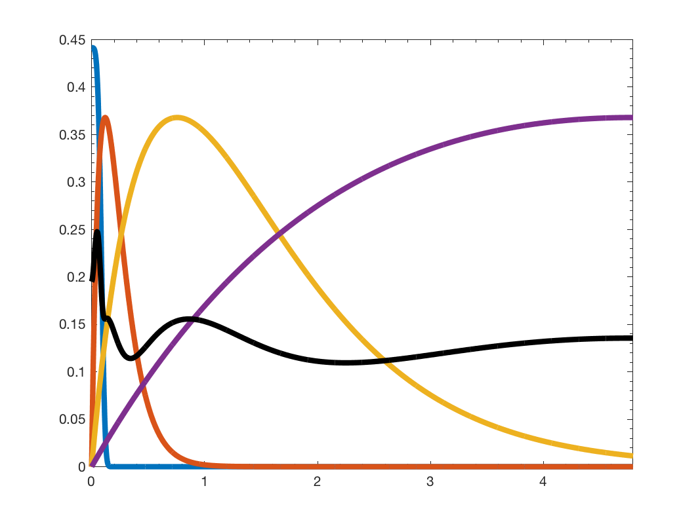

[filter_data,test_sum]=gsp_plot_filter(G,filters); [filter_data,test_sum]=gsp_plot_filter(G,filters,param);
| G | Graph object (Or lmax) |
| filters | Cell array of filters (or single filter) |
| param | Optional variable containing additional parameters |
non none
'gsp_plot_filters(G, filter, param)' plots a system of graph spectral filters.
Example:
Nf = 4; G = gsp_sensor(100); G = gsp_estimate_lmax(G); g = gsp_design_mexican_hat(G, Nf); gsp_plot_filter(G, g);